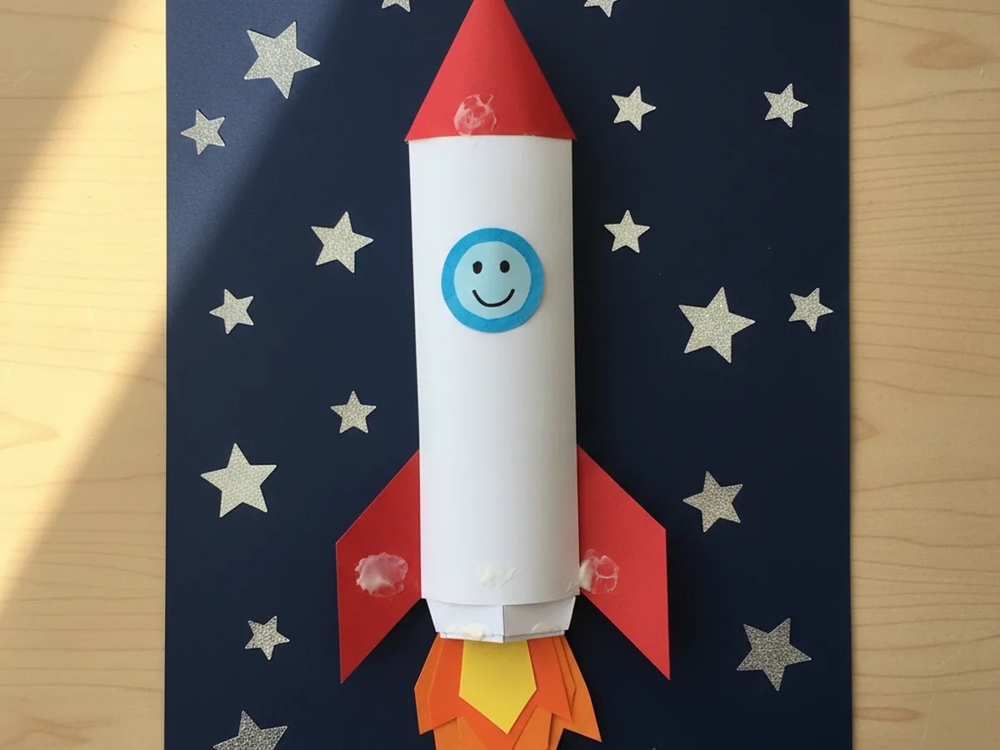
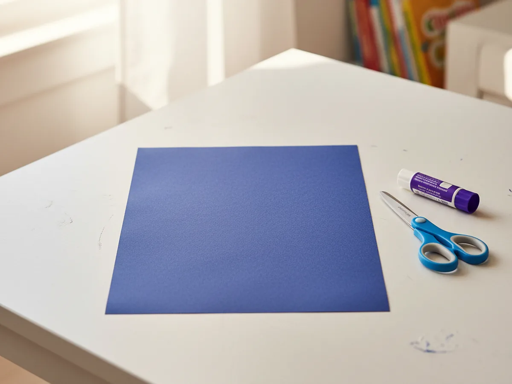
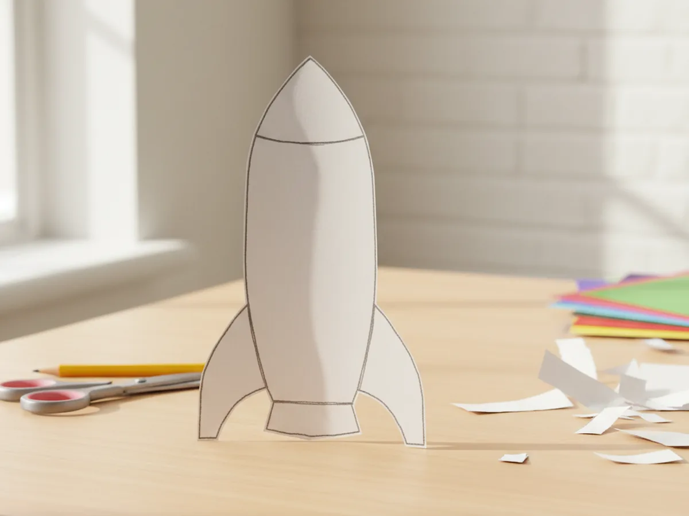
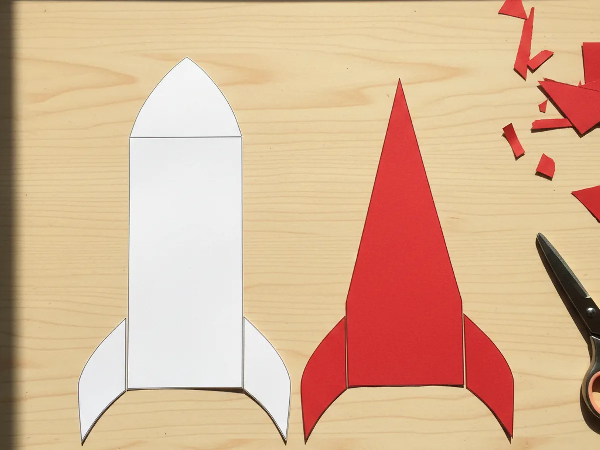
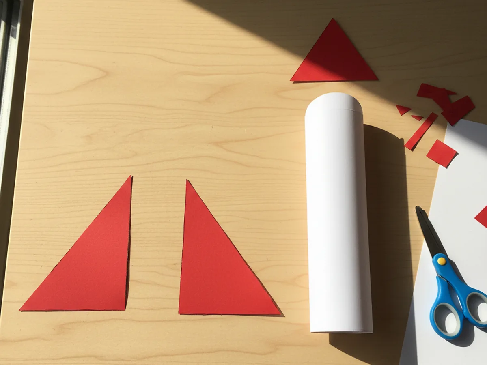
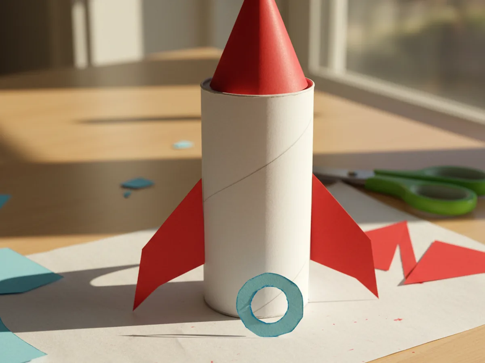
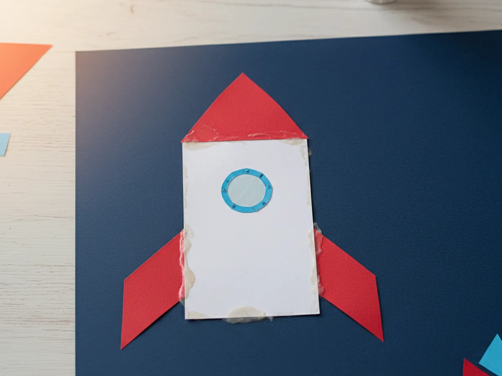
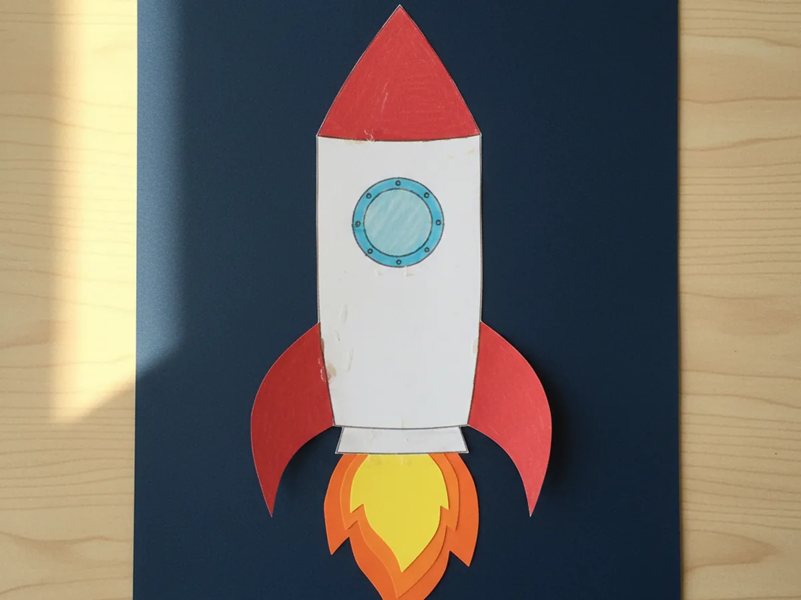
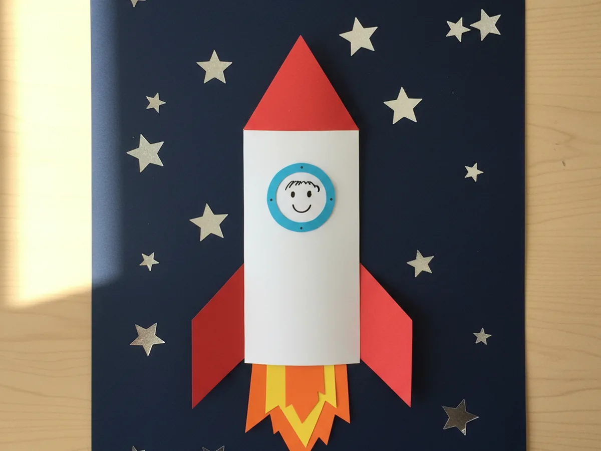

There is something magical about a little rocket blasting off across a starry paper sky. This paper rocket craft is one of those gentle projects that feels like a small space adventure for your child, with a finished result they will proudly want to hang on the bedroom wall. No tricky shapes, no mess, and everything you need is probably already in your craft drawer. 🚀
The whole project takes about 30 minutes from start to finish, including the fun bits where your child sticks shiny stars across the night sky. It is the kind of cozy afternoon activity that turns into big smiles and wild stories about which planet the rocket is heading to today.
Why Kids Love This Craft
Rockets are pure imagination fuel for young children. The idea of flying past stars and visiting the moon sparks something special, and this paper rocket craft gives kids a chance to build that whole scene with their own hands. From the tall white body to the bright red fins to the shiny stars dotted across the sky, every piece feels like part of a real space mission. ✨
Each step is simple enough that even little hands can do most of it independently. Cutting the basic shapes, pressing the rocket pieces together, and sticking on stars all involve the kind of gentle fine motor practice young kids need anyway. Because the craft comes together piece by piece, children get that lovely feeling of watching something appear in front of them, almost like a real launch sequence.
Once the paper rocket craft for kids is finished, it often becomes part of a longer pretend-play moment. Kids love naming their rocket, inventing the astronaut peeking out of the porthole, and making up stories about the planets waiting on the other side of the stars. That gentle shift from crafting into storytelling is exactly the kind of open-ended play that keeps little minds beautifully busy.
What You'll Need
Everything for this paper rocket craft comes from a basic craft drawer. Here is the full list of supplies.
- Crayola Construction Paper (240 sheets, assorted colors), dark blue for the night sky, white for the rocket body, red for the nose cone and fins, and yellow and orange for the flames.
- Elmer's Washable Glue Sticks (6 count), a glue stick is cleaner than liquid glue and just as strong for paper.
- Fiskars 5" Blunt-Tip Kids Scissors, safe and easy for little hands to manage all the cutting.
- Crayola Broad Line Washable Markers (12 count), for drawing a tiny astronaut face in the porthole and adding details around the rocket.
- eBoot Silver Foil Star Stickers (1750 count), perfect for filling the night sky with shiny stars in seconds.
- Pencil, for lightly sketching the rocket body and fin shapes before cutting.
Step-by-Step Instructions
Take your time with these steps and let your child help wherever they can. The paper rocket craft comes together naturally as each piece finds its place on the dark blue night sky.
Step 1: Prepare the Night Sky Background
Take a full sheet of dark blue construction paper and lay it flat on the table in portrait orientation. This will be the night sky behind your paper rocket craft. There is nothing to cut or draw at this stage, just smooth the paper out and make sure it sits nicely so the rocket pieces will have a calm, dark background to land on.

Step 2: Cut Out the Rocket Body
From a sheet of white construction paper, cut a tall rectangle to serve as the rocket body. Aim for a shape that is roughly twice as tall as it is wide so the rocket looks satisfyingly slim and tall. Then gently round the top two corners with your scissors to give the body its classic rocket curve. If your child is doing the cutting, sketch the shape first lightly with a pencil so the lines are easy to follow.

Step 3: Cut the Red Nose Cone
From red construction paper, cut a triangle to serve as the nose cone of the rocket. The base of the triangle should match the width of the white rocket body so the two pieces line up cleanly when you assemble them later. Aim for a tall, slightly pointed triangle rather than a wide one, since a tall nose cone gives your paper rocket that classic ready-to-launch look.

Step 4: Cut Two Red Fins
From the same red construction paper, cut two right-angled triangles to serve as the side fins at the bottom of the rocket. The straight edges should be roughly the height of the lower third of the rocket body, and the two fins should mirror each other so they point outward. These little fins are what give your paper rocket craft that unmistakable flying silhouette.

Step 5: Cut the Round Porthole Window
From light blue construction paper, cut a small circle to serve as the round porthole window in the middle of the rocket. A circle about the size of a bottle cap works perfectly. The pop of light blue against the white body makes the rocket look bright and lively, and it gives you a fun spot to add a tiny astronaut face later in the project.

Step 6: Glue the Rocket Together on the Background
Now bring everything together. Spread glue on the back of the white rocket body and press it firmly in the center of the dark blue background paper. Then glue the red nose cone right on top, lining up the base of the triangle with the rounded top of the body. Finally, glue the two red fins onto the sides of the bottom of the rocket so they point outward, and stick the light blue porthole circle in the middle of the white body.

Step 7: Add the Booster Flames
Cut wavy flame shapes from yellow and orange construction paper. The yellow flame should be slightly smaller than the orange flame so you can layer them, with the orange peeking out behind the yellow. Spread glue on the back of the orange flame first and press it just below the bottom of the rocket, then glue the yellow flame on top so it nestles inside the orange. The layered flames make the paper rocket look like it is genuinely lifting off.

Step 8: Add Stars and a Tiny Astronaut Face
This is the best step. Hand your child a sheet of silver foil star stickers and let them dot the night sky around the rocket with shiny stars. There is no wrong way to do this, the more scattered the better. Then use a white or black marker to draw a tiny smiling astronaut face inside the light blue porthole window. By the end, the paper rocket craft looks like it is genuinely blasting off through space. 🌟

Variations to Try
3D Cardboard Tube Rocket: Swap the flat rocket body for a toilet paper roll standing upright. Wrap the tube in white paper, attach the red triangle nose cone with tape at the top, and glue the fins around the bottom. This version turns the paper rocket craft into a freestanding three-dimensional model that can actually stand on a shelf.
Galaxy Background Version: Swap the dark blue background for a sheet of black construction paper, then let your child sponge dabs of pink, purple, and white tempera paint across it before adding the rocket. The dreamy galaxy effect is perfect for older kids who want a more dramatic finished look.
Name the Astronaut: Instead of drawing a generic face in the porthole, help your child cut out a tiny photo of their own face and glue it inside the window. Suddenly your child is the astronaut flying the rocket, which makes a sweet keepsake to read about real astronauts together later.
Final Thoughts
This paper rocket craft is one of those lovely afternoon activities where the whole is so much bigger than the sum of its parts. A few triangles, a rectangle, some shiny stars, and suddenly you have a whole little space scene with a story attached. Your child will beam when it is done, and you will have one of those cozy memories where everyone was just happily focused together. ❤️
Tape the finished rocket up somewhere visible so your child can admire their own work. There is real pride in watching a little one point at the wall and say, "I made that, and it is going to the moon."
More Crafts You'll Love
If your child loved this paper rocket craft, these other flying and folding paper projects make wonderful next activities: